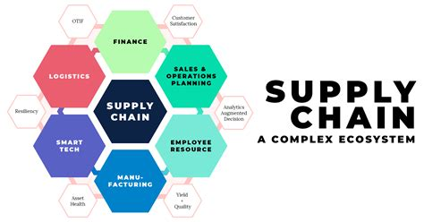

12 ans de Supply Chain

Issu d'une formation d'Ingénieur (double
diplôme franco-allemand de l'école EPF à Sceaux), j'ai pu découvrir la
programmation durant plusieurs stages en entreprise.
Mais je me suis tout de suite dirigé vers la
Supply Chain en arrivant sur le marché du travail.
La logistique, le transport et l'approvisionnement m'intéressaient
grandement par leur ampleur et leur complexité.
Embauché par Danone en sortie d'Ecole, j'ai pu découvrir le monde de la logistique en entrepôt, ainsi que l'implémentation d'un nouveau système d'information WMS (SAP).
Après avoir ensuite rejoint le Groupe Mulliez chez Auchan, j'ai pu faire mes armes sur la partie approvisionnement. Les optimisations à aller chercher passaient beaucoup par des automatisations, et mon expérience en programmation a été bien utile. De nombreux outils Excel ont pu voir le jour, basés sur des macros (VBA) et des requêtes SQL sur base de données AS400. Ils ont permis un gain de temps substanciel pour les équipe approvisionnement.
Quelques années ont passé, et l'envie de découvrir le dernier domaine
qui me manquait en Supply Chain,
le transport, s'est fait ressentir. C'est
donc sur le poste d'Acheteur Transport International 🚚✈️🛳️
que je me suis ensuite épanoui, au niveau de la Holding d'Auchan. Les
problématiques de saisonnalité, de concurrence et de monopole, ainsi
que les impacts environnementaux m'ont animé durant presque 4 ans.
Mais après 8 années passées dans le groupe Auchan, l'envie de
découvrir une nouvelle entreprise et de nouveaux fonctionnements s'est
fait ressentir.
J'ai alors rejoint
les équipes Adeo (Leroy Merlin), de nouveau
sur un poste en approvisionnement, avec une vision stratégique sur la
chaine globale. Mais la passion du domaine s'étiolait petit à petit.
Un sentiment de "déjà vu", et de lassitude intellectuelle a motivé ma
quête d'un nouveau challenge : une
reconversion dans le
développement informatique💻.
C'est un domaine qui m'a toujours passionné, et que j'ai cotoyé en filigrane tout au long de ma carrière en développant des
outils d'automatisation de "tâches manuelles sans valeur ajoutée".
J'ai donc sauté le pas, en m'engageant dans cette formation de
Développeur JS Fullstack chez O'Clock.